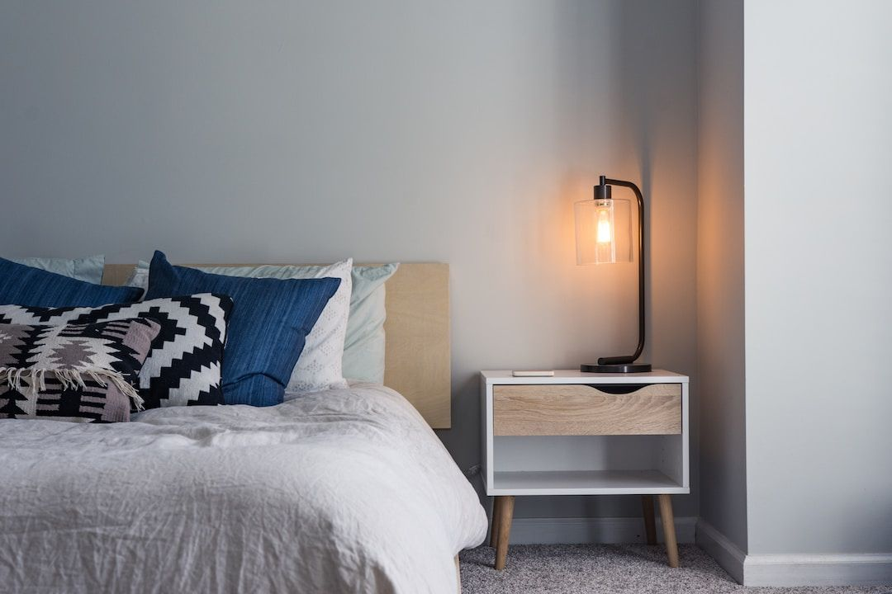

Answers · Everyday nervous system resets
The Benefits of Making Your Bed Every Morning
You've probably heard the advice to start your day by making your bed. It seems like a small and almost unimportant task, and that's exactly why it works: in about two minutes you give yourself a finished win, a calmer room and a better place to come back to at night.

A small win to start the day
When the very first thing you complete in the morning is your bed, you begin the day with proof that you follow through, and in my experience that feeling carries into the next task and the one after it.
A calmer space, a calmer mind
Your surroundings affect your stress more than you might think. In a 2010 UCLA study, women who described their homes with more words about clutter and unfinished projects had flatter daily cortisol patterns, a stress hormone profile linked with poorer health, and their mood worsened over the day. A made bed is the biggest visual surface in your bedroom, so smoothing it out changes the feel of the whole room.
Better sleep at night
Climbing into a bed that's been made feels inviting, and that small sense of order is part of good sleep hygiene.
A habit that anchors other habits
Because it's so easy, making your bed is a wonderful anchor for building a morning routine. Once it's automatic, you can attach the next habit to it: make the bed, then stretch; make the bed, then drink a glass of water; make the bed, then sit down with your journal.
Make it a ritual
- Do it as soon as you get up, before you check your phone.
- Keep the bedding simple so it takes two minutes or less.
- Use it as a moment of intention: as you smooth the covers, decide how you want today to feel.
Keep exploring
- What are the benefits of a morning stretch?
- How can morning journaling change my day?
- I know what I need to do, so why can't I do it?
Common questions
Is making your bed every morning actually good for you?
For most people, yes. It gives you an early sense of accomplishment, makes your room feel calmer, and gives you an inviting bed to climb into at night.
Does making your bed help with stress?
It can. Research has linked a cluttered home with a less healthy stress hormone pattern in women, and a made bed changes the feel of your whole bedroom in about two minutes.
What should I do after making my bed?
Attach another small habit to it, like a short stretch, a glass of water or a few minutes of journaling, so your routine builds on something you already do.
Sources
- Saxbe, D. E., & Repetti, R., UCLA (2010). No place like home: home tours correlate with daily patterns of mood and cortisol. Personality and Social Psychology Bulletin.
This article is for education and everyday wellbeing; it isn't medical advice. If you're struggling with your sleep, mood or health, please talk with a licensed professional. Keep reading: all answers · the free community · about Tamara Rose